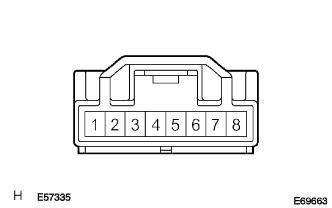
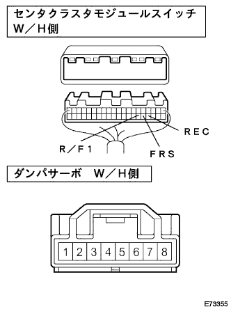

Harter & Air Condition Syona System Inside and Outside and External Changes Servo Circuit |
| Step 1 | Actuator check |
Incidental check mode and check the operation of the Dampasarbo (suction port).(The point isreference)
| Step | Set temperature | Blower level | Piercing | Sucking mouth |
|---|---|---|---|---|
| 1 | MAX COLD -20.5 | 0 | Face | Outside air |
| 2 | 21.0-22.5 | 1 | B/L | Outside air |
| 3 | 23.0-25.0 | 1 | Foot1 | Outside air position (except cold region) 2 layers inside and outside (cold regions) |
| 4 | 25.5-27.5 | 16 | Foot2 | Position |
| 5 | 28.0-30.0 | 16 | F/d | Position |
| 6 | 30.5 -Max Hot | 31 | Def | Position |
|
| ||||
| NG | |
| Step 2 | Wire harness or connector inspection (Dampa servo power supply system) |
Cut the Dan Paserbo connector.
|  |
Use SST (Toyota Electrical Tester) to inspect the conversation between Dampasarbo's vehicle wire harness side connector 8 terminals ← → body earth.
Turn on the IG switch.
Use SST (Toyota Electrical Tester) to measure the voltage between Dampasarbo's vehicle wire harness side connector 7 terminals ← → 8 terminals.
|
| ||||
| OK | |
| Step 3 | Dampa servo SUB-ASSY No.1 Single Inspection |
Take off the Dampa servo.
 |
Connect the battery plus to the seven terminals of the connector, and the negative battery negative to the 8 terminals.
When the battery negative is connected to each terminal of the connector, the arm rotates smoothly and stops at each mode position.
| Battery negative connection terminal | Arm stop position |
|---|---|
| 1 | Position |
| 2 | Inside and outside the two layers |
| 3 | Outside air |
|
| ||||
| OK | |
| Step 4 | Wire harness or connector inspection (Center Cluster Module Switch-Dan Paserbo) |
Cut the connector of the center cruster module switch.
|  |
Use SST (Toyota Electrical Tester) to inspect the conduction and GND short (short circuit) between each connector terminal of the vehicle wire harness.
| Senta Cluster Module Switch side Terminal number (terminal symbol) | Dampasarbo side Terminal number |
|---|---|
| A25 (FRS) | 3 |
| A24 (REC) | 1 |
| Senta Cluster Module Switch side Terminal number (terminal symbol) | Dampasarbo side Terminal number |
|---|---|
| A25 (FRS) | 3 |
| A26 (R/F1) | 2 |
| A24 (REC) | 1 |
|
| ||||
| OK | ||
| ||